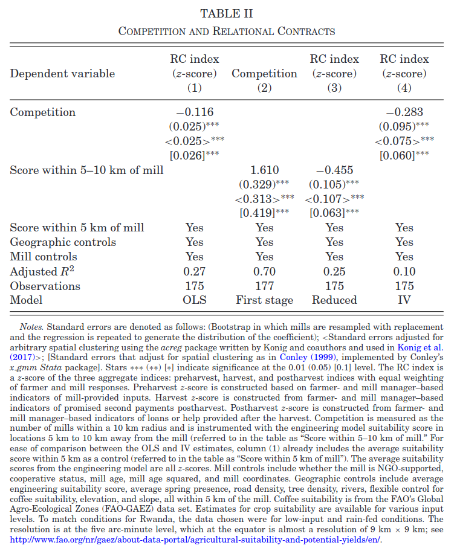
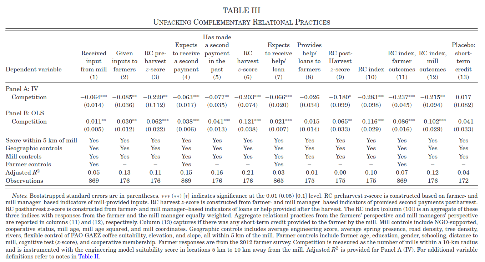

ECON 626: Final - Solutions
\[ \def\R{{\mathbb{R}}} \def\Er{{\mathrm{E}}} \def\var{{\mathrm{Var}}} \newcommand\norm[1]{\left\lVert#1\right\rVert} \def\cov{{\mathrm{Cov}}} \def\En{{\mathbb{E}_n}} \def\rank{{\mathrm{rank}}} \newcommand{\inpr}{ \overset{p^*_{\scriptscriptstyle n}}{\longrightarrow}} \def\inprob{{\,{\buildrel p \over \rightarrow}\,}} \def\indist{\,{\buildrel d \over \rightarrow}\,} \DeclareMathOperator*{\plim}{plim} \]
You have 150 minutes to complete the exam. The last two pages have some possibly useful formulas.
There are 100 total points.
Health Insurance and Health Spending
In “Selection on Moral Hazard in Health Insurance,” Einav et al. (2013) study a change in employee health insurance at Alcoa, a large manufacturing firm. The firm changed the menu of employee health insurance plans from three plans with relatively low deductibles to five plans with higher deductibles. The authors had data on employee insurance plan choices and medical spending in each year from 2003-2006. Employees were switched into the new, higher deductible plans when their union contract was up for renewal beginning in 2004. Thus, some employees switched to the new plans in 2004, some in 2005, some in 2006, and some remained in the old plans throughout the sample.
Fixed Effects (6 points)
To estimate the effect of the new plans, the authors estimate a two-way fixed effects regression \[ y_{it} = \alpha_i + \delta_t + \beta T_{it} + \epsilon_{it} \] where \(y_{it}\) health spending by employee \(i\) in year \(t\), \(T_{it}\) is an indicator for having the new plans, and \(\alpha_i\) and \(\delta_t\) are fixed effects. Table A3 below shows estimates of \(\beta\). Briefly describe a problem with these estimates.
Solution. With variation in treatment timing and treatment heterogeneity, the two way fixed effects estimate, \(\hat{\beta}\) recovers a weighted sum of individual treatment effects. In some cases, these weights can be negative, and regardless, do not have a clear interpretation.
What should we have done? (7 points)
Describe a better estimator for the effect of these new plans on spending. Be clear about what sort of average effect your estimator recovers and clearly state any assumptions needed for your estimator to have a causal interpretation.
Solution. If we assume parallel trends, \[ \Er[y_{it}(0) - y_{it-s}(0) | T_{it}=1, T_{it-s}=0] = \Er[y_{it}(0) - y_{it-s}(0) | T_{it}=0, T_{it-s}=0] \] Then, \[ \begin{align*} ATT_{t,t-s} & = \Er[y_{it}(1)-y_{it}(0) | T_{it}=1,T_{it-s}=0] \\ & = \Er[y_{it} - y_{it-s} | T_{it}=1,T_{t-s}=0] - \Er[y_{it} - y_{it-s} | T_{it}=0,T_{t-s}=0] \end{align*} \] This difference in differences of conditional expectations of observed data, so it can be estimated by replacing the expectations with sample averages. \[ \begin{align*} \widehat{ATT}_{t,t-s} = \frac{\sum_i (y_{it}-y_{it-s})T_{it}(1-T_{it-s})}{\sum_i T_{it}(1-T_{it-s})} - \frac{\sum_i (y_{it}-y_{it-s})(1-T_{it})(1-T_{it-s})}{\sum_i (1-T_{it})(1-T_{it-s})} \end{align*} \] These estimate the average treatment effect on people who were treated at time \(t\) and untreated at time \(t-s\).
If we want a single estimate, we can take an average of the \(ATT_{t,t-s}\) for example, \[ \widehat{\bar{ATT}} = \sum_{t=2004}^{2006} \frac{\sum_{i} T_{it}}{\sum_{i,t} T_{it}} \widehat{ATT}_{t,2003} \] This is an average treatment effect on the treated weighted by the number of people treated. Other averages are also reasonable to report.
Comparing Columns (1) & (4)
The difference in magnitude in columns (1) and (4) is striking. Assume (as is approximately true) that 1/4 of people in the sample were switched to the new plans in 2004, 1/4 in 2005, 1/4 in 2006, and 1/4 not switched.
Weights (7 points) slighty more difficult
How does the average treatment effect in 2006 of the people who switched in 2004 — \(\Er[y_{i,2006}(1) - y_{i,2006}(0) | \text{switched in 2004}]\) — affect the fixed effects estimate of \(\hat{\beta}\)? Hint: using the notation in the “Definitions and Results”, what is \(\hat{\omega}_{it}\) for these people?
Solution. We have \[ \begin{align*} \hat{\omega}_{it} \sum \tilde{T}_{it}^2 & = T_{it} - \bar{T}_i - \bar{T}_t + \bar{T} \\ & = 1 - 3/4 - 3/4 + (1/4*3/4 + 1/4*1/2 + 1/4*1/4) \\ & = -1/2 + 3/8 \\ & = -1/4 \end{align*} \]
Hence, \(\Er[y_{i,2006}(1) - y_{i,2006}(0) | \text{switched in 2004}]\) has a negative weight in \(\hat{\beta}\).
Change in Weights with Attrition (6 points) slightly more difficult
Suppose that switching to the new plans makes people more likely to leave Alcoa, so that column (4) has a lower portion of people switched to the new plans and higher portion not switched. How does that change the weight on \(\Er[y_{i,2006}(1) - y_{i,2006}(0) | \text{switched in 2004}]\) in \(\hat{\beta}\)?
Solution. As in the previous part, \[ \begin{align*} \hat{\omega}_{it} \sum \tilde{T}_{it}^2 & = T_{it} - \bar{T}_i - \bar{T}_t + \bar{T} \\ & = 1 - 3/4 - \bar{T}_{t} + \bar{T} \\ \end{align*} \] The question says that less of the sample will be in new plans, so \(\bar{T}_t\) and \(\bar{T}\) will both be lower. Generally, \(\bar{T}_t\) will decrease by more than \(\bar{T}\). For example, suppose the untreated are half instead of one quarter of the sample in column (4), then \(\bar{T}_t = 3/8\) and \(\bar{T} = 3/16\). This makes \(\hat{\omega}_{it} \sum \tilde{T}_{it}^2 = 1/16\), so we now have a positive weight on \(\Er[y_{i,2006}(1) - y_{i,2006}(0) | \text{switched in 2004}]\). This could explain the much larger estimate in column (4).

Informal Contracting in Coffee Production
In “Competition and Relational Contracts in the Rwanda Coffee Chain,” Macchiavello and Morjaria (2020) examine how more competition can lead to worse outcomes in an environment without formal contracts. The authors create an index of “relational contracting” between farmers and mills. Relational contracting consists of loans, delayed payments, and so on that are sustained by repeated interaction instead of any formal contract enforcement. The authors then want to estimate how competition (the number of mills) affects relational contracting.
OLS (6 points)
The authors estimate \[ RC_m = \alpha + \beta C_m + \eta X_m + \gamma Z_m + \epsilon_m \] where \(RC_m\) is a relational contracting index for mill \(m\), \(C_m\) is the number of competing mills within 10km of mill \(m\), \(X_m\) are mill characteristics, and \(Z_m\) are geographic characteristics of the land around the mill.
Give one reason why \(\Er[C_m \epsilon_m]\) might not be zero, speculate on the sign of \(\Er[C_m \epsilon_m]\), and say whether whether you expect \(\hat{\beta}^{OLS}\) to be greater or less than \(\beta\).
Instrument (6 points)
As an instrument for \(C_m\), the authors use the predicted number of mills 5-10km away from an engineering model of coffee production. It predicts mill locations based on geography and local climate. Column (2) of Table II shows estimates of the first stage regression of \(C_m\) on this instrument. What assumption can we check by looking at this regression? Are you confident that this assumption is met? If not, what should be done about it? Hint:\(F=t^2 \approx \left(\frac{1.6}{0.4}\right)^2 \approx 16\).
Solution. The first stage F statistic indicates that the instrument might be weak. That is, the instrument might not be corrrelated with \(C_m\). With this small of an F-statistic we should use an identification robust inference method instead of the usual t-test in column (4). The AR test or VtF statistic should be used instead.
Dependence (6 points)
The sample consists of mills in Rwanda, some of which might be near one another. Briefly, how does this affect the consistency and asymptotic distribution of the estimates of \(\beta\) in Table II? What in the table, if anything, needs to be calculated differently than if observations were independent?
Solution. Mills near one another likely interact with the same or similar farmers. Local variation in relational practices could then show up as spatial correlation in \(\epsilon_m\). As long as the correlation is not too strong, usual estimates remain consistent. However, the asymptotic variance will be affected. The standard errors need to be calculated differently.
More Outcomes (7 points)
Table 3 shows estimates of the same model as table 2, except instead of the relational contracting index as the outcome, the outcome is one of the components of the index. Different columns show different components. As shown, the coefficients are all negative and most are statistically significant. Should this make us less concerned about the potential weak instrument problem? Why or why not? Hint: these regressions all have the same first stage. A really good answer to this question would be fairly precise and perhaps derive the joint distribution of these estimates under weak instrument asymptotitcs.
Solution. To simplify consider a model without controls. We have 13 equations of interest \[ y_{jm} = \beta_j C_m + \epsilon_{jm} \] that share a common first stage \[ C_m = \pi W_m + u_m. \] The IV estimates are \[ \begin{align*} \hat{\beta}_j = & \frac{W'y_j}{W'C} \\ = & \beta_j + \frac{W'\epsilon_j}{\pi W'W + W'u} \end{align*} \] We have a weak instrument problem when the signal in the instrument – \(\pi W'W\) is of the same magnitude as the noise — \(W'u\). This can be problematic because we might divide by something near \(0\) and get very noisy results. The stability of the results here and especially the fact that (13) is near 0, gives us some indication that \(\pi W'W + W'u\) is not too close to 0. However, the signal and noise being similar magnitude can still be a problem, we could have \(\pi W'W + W'u\) being the opposite sign or much different magnitude than \(\pi W'W\). I do not think Table III helps rule out that possibility.


A Two-Step Estimator
Estimator (7 points)
Suppose you observe \(\{y_i,d_i,x_i\}_{i=1}^n\), and want to estimate the model \[ y_i = \theta d_i + x_i'\beta + \epsilon_i. \] Assume \(\Er[d \epsilon] = 0\), but it might be that \(\Er[x \epsilon] \neq 0\). Fortunately you have an estimate of \(\beta\), \(\hat{\beta}\) (say from some other dataset), that is consistent and asymptotically normal, \(\sqrt{n}(\hat{\beta} - \beta) \indist N(0, \Sigma)\).
Use \(\hat{\beta}\) and the assumption that \(\Er[d \epsilon]=0\) to find an estimator for \(\theta\).
Solution. We can put the model into the moment condition and derive a plug-in estimator. \[ \begin{align*} 0 = & \Er[d (y - \theta d - x'\beta)] \\ \theta = & \frac{\Er[d(y-x'\beta)}{\Er[d^2]} \end{align*} \] so assuming \(\Er[d^2] \neq 0\), we can use the estimator \[ \hat{\theta} = \frac{\sum_i d_i (y_i - x_i'\hat{\beta})}{\sum_i d_i^2} \]
Consistency (7 points)
Assume that the data is i.i.d. and \(d\), \(x\), and \(\epsilon\) have finite second moments. Show that \(\hat{\theta} = \frac{\sum_i d_i (y_i - x_i'\hat{\beta})}{\sum_i d_i^2}\) is a consistent estimate of \(\theta\).
Solution. \[ \begin{align*} \hat{\theta} & = \frac{\sum_i d_i (y_i - x_i'\hat{\beta})}{\sum_i d_i^2} \\ & = \frac{\sum_i d_i (y_i - x_i'\beta)}{\sum_i d_i^2} - \frac{\sum_i d_i x_i'(\hat{\beta} - \beta))}{\sum_i d_i^2} \\ & = \theta + \frac{\sum_i d_i\epsilon_i}{\sum_i d_i^2} - \frac{\sum_i d_i x_i'(\hat{\beta} - \beta))}{\sum_i d_i^2} \\ \end{align*} \] Using the Cauchy-Schwarz and triangle inequalities, we have \[ \left\vert \frac{\sum_i d_i x_i'(\hat{\beta} - \beta))}{\sum_i d_i^2} \right\vert \leq \frac{\left(\sum_i |d_i|\norm{x_i} \right) \norm{\hat{\beta} - \beta}}{\sum_i d_i^2} \] Assume that \(\Er[|d|\norm{x}]\) is finite (arguably, it’s a second moment of \(d\) and \(x\)). Then the law of large numbers applies, and \[ \left\vert \frac{\sum_i d_i x_i'(\hat{\beta} - \beta))}{\sum_i d_i^2} \right\vert \leq o_p(1) \] Additionally, by the law of large numbers, \(\frac{\sum_i d_i\epsilon_i}{\sum_i d_i^2} \inprob \Er[d\epsilon]/\Er[d^2] = 0\).
Hence, \(\hat{\theta} \inprob \theta\)
Distribution (7 points)
Find the asymptotic distribution of \(\hat{\theta}\).
Solution. As in the previous part, \[ \begin{align*} \sqrt{n}(\hat{\theta} - \theta) = & \frac{\frac{1}{\sqrt{n}}\sum_i d_i\epsilon_i}{\frac{1}{n} \sum_i d_i^2} - \frac{\frac{1}{n} \sum_i d_i x_i'}{\frac{1}{n} \sum_i d_i^2}\sqrt{n}(\hat{\beta} - \beta) \\ \end{align*} \] Assume that \(\hat{\beta}\) is independent of \(d_i \epsilon_i\). Then, using the CLT and law of large numbers, \[ \sqrt{n}(\hat{\theta} - \theta) \indist \frac{\xi}\Er[d^2] - \frac{\Er[dx]}{\Er[d^2]} \xi_\beta \] where \(\xi \sim N(0, \Er[d^2 \epsilon^2]\) and \(\xi_\beta \sim N(0,\Sigma)\). Equivalently, \[ \sqrt{n}(\hat{\theta} - \theta) \indist N\left(0 ,\frac{1}{\Er[d^2]^2}\left(\Er[d^2 \epsilon^2] + \Er[dx]\Sigma \Er[x'd]\right)\right) \]
Better Estimator (7 points)
Suppose that \(\Er[d|x] = x'\gamma\), and you have a consistent, asymptotically normal estimator \(\hat{\gamma}\) with \(\sqrt{n}(\hat{\gamma} - \gamma) \indist N(0,\Gamma)\). Also assume that \(\Er\left[ (d - x'\gamma) \epsilon \right] = 0\). Show that \(\tilde{\theta} = \frac{\sum_i (d_i - x_i'\hat{\gamma})(y_i - x_i'\hat{\beta})} {\sum_i (d_i - x_i'\hat{\gamma})d_i}\) is a consistent estimator for \(\theta\).
Solution. \[ \begin{align*} \tilde{\theta} = & \frac{\sum_i (d_i - x_i'\hat{\gamma})(y_i - x_i'\hat{\beta})} {\sum_i (d_i - x_i'\hat{\gamma})d_i} \\ = & \theta - \frac{\sum_i (d_i - x_i'\hat{\gamma})x_i'(\hat{\beta} - \beta)} {\sum_i (d_i - x_i'\hat{\gamma})d_i} + \frac{\sum_i (d_i - x_i'\hat{\gamma})\epsilon_i} {\sum_i (d_i - x_i'\hat{\gamma})d_i} \\ = & \theta - \frac{\sum_i (d_i - x_i'\gamma)x_i'(\hat{\beta} - \beta)} {\sum_i (d_i - x_i'\hat{\gamma})d_i} + \frac{\sum_i x_i'(\hat{\gamma} - \gamma)x_i'(\hat{\beta} - \beta)} {\sum_i (d_i - x_i'\hat{\gamma})d_i} + \frac{\sum_i (d_i - x_i'\gamma)\epsilon_i} {\sum_i (d_i - x_i'\hat{\gamma})d_i} - \frac{\sum_i (x_i'(\hat{\gamma} - \gamma))\epsilon_i} {\sum_i (d_i - x_i'\hat{\gamma})d_i} \end{align*} \]
After multiplying the numerator and denominator by \(1/n\), we can write the denominator as \[ \begin{align*} \frac{1}{n} \sum_i (d_i - x_i'\hat{\gamma})d_i = & \frac{1}{n} \sum_i (d_i - x_i'\gamma)d_i - \frac{1}{n} \sum_i d_ix_i'(\hat{\gamma} -\gamma) \\ \inprob \Er[(d-x'\gamma)d] \end{align*} \]
Each term in the numerator is either an average of a mean zero random variable, or an average times estimation error in \(\beta\) or \(\gamma\). Thus, \[ \tilde{\theta} \inprob \theta \]
Why is it Better? (7 points)
Find the asymptotic distribution of \(\tilde{\theta}\).
Solution. Using the algebra from the previous part, we have \[ \begin{align*} \sqrt{n}(\tilde{\theta} - \theta) = & - \frac{\frac{1}{n} \sum_i (d_i - x_i'\gamma)x_i' \sqrt{n}(\hat{\beta} - \beta)} {\frac{1}{n} \sum_i (d_i - x_i'\hat{\gamma})d_i} \\ & + \frac{(\hat{\gamma} - \gamma)' \frac{1}{n} \sum_i x_ix_i' \sqrt{n} (\hat{\beta} - \beta)} {\frac{1}{n} \sum_i (d_i - x_i'\hat{\gamma})d_i} \\ & + \frac{\frac{1}{\sqrt{n}} \sum_i (d_i - x_i'\gamma)\epsilon_i} {\frac{1}{n} \sum_i (d_i - x_i'\hat{\gamma})d_i} \\ & - \frac{ \sqrt{n}(\hat{\gamma} - \gamma)) \frac{1}{n} \sum_i (x_i'\epsilon_i} {\frac{1}{n}\sum_i (d_i - x_i'\hat{\gamma})d_i} \\ = & \frac{\frac{1}{\sqrt{n}} \sum_i (d_i - x_i'\gamma)\epsilon_i} {\frac{1}{n} \sum_i (d_i - x_i'\gamma)d_i} + o_p(1) \end{align*} \] Note how each time \(\hat{\beta} - \beta\) or \(\hat{\gamma}-\gamma\) appear, they get multiplied by something else that is \(O_p(n^{-1/2})\) and so vanish from the final line.
Applying the CLT and LLN, we have \[ \sqrt{n}(\tilde{\theta} - \theta) \indist N(0, \Er[(d - x'\gamma)^2 \epsilon^2]/\Er[(d-x'\gamma)d]). \] This is the same distribution as if we knew \(\beta\) and \(\gamma\) and plugged them in.
What’s really Great About it? (7 points) more difficult
Suppose that \(\hat{\gamma}\) and \(\hat{\beta}\) are not \(\sqrt{n}\) asymptotically normal. Instead, you only know that \(\norm{\hat{\gamma} - \gamma} = o_p(n^{-1/4})\) and \(\norm{\hat{\beta} - \beta} = o_p(n^{-1/4})\). Show that the asymptotic distribution of \(\sqrt{n}(\tilde{\theta} - \theta)\) is the same as in the previous part.
Solution. In the previous part, we can redistribute the \(n^{1/2}\) to write \[ \begin{align*} \sqrt{n}(\tilde{\theta} - \theta) = & - \frac{\frac{1}{n^{3/4}} \sum_i (d_i - x_i'\gamma)x_i' n^{1/4}(\hat{\beta} - \beta)} {\frac{1}{n} \sum_i (d_i - x_i'\hat{\gamma})d_i} \\ & + \frac{n^{1/4}(\hat{\gamma} - \gamma)' \frac{1}{n} \sum_i x_ix_i' n^{1/4} (\hat{\beta} - \beta)} {\frac{1}{n} \sum_i (d_i - x_i'\hat{\gamma})d_i} \\ & + \frac{\frac{1}{n^{1/2}} \sum_i (d_i - x_i'\gamma)\epsilon_i} {\frac{1}{n} \sum_i (d_i - x_i'\hat{\gamma})d_i} \\ & - \frac{ n^{1/4}(\hat{\gamma} - \gamma)) \frac{1}{n^{3/4}} \sum_i (x_i'\epsilon_i} {\frac{1}{n}\sum_i (d_i - x_i'\hat{\gamma})d_i} \\ = & \frac{\frac{1}{n^{1/2}} \sum_i (d_i - x_i'\gamma)\epsilon_i} {\frac{1}{n} \sum_i (d_i - x_i'\hat{\gamma})d_i} + o_p(1) \end{align*} \] where we used the fact that terms like \(\frac{1}{n^{1/2}} \sum_i (d_i - x_i'\gamma)x_i' = O_p(1)\), so \(\frac{1}{n^{3/4}} \sum_i (d_i - x_i'\gamma)x_i' \inprob 0\), and \[ n^{1/4}(\hat{\gamma} - \gamma)' \frac{1}{n} \sum_i x_ix_i' n^{1/4} (\hat{\beta} - \beta) = o_p(1) \Er[xx'] o_p(1) = o_p(1) \]
Thus, we see that even if \(\gamma\) and \(\beta\) are estimated at slow rates, \(\tilde{\theta}\) can be \(\sqrt{n}\) asymptotically normal.
Dynamic Panel
Consider the model: \[ y_{it} = \rho y_{it-1} + x_{it}'\beta + \alpha_i + u_{it} \] for \(i=1,.., N\) and \(t=1,...,T\). Assume observations are independent accross \(i\), \(x\) is strictly exogenous, \(\Er[x_{it} u_{is}] = 0 \forall s,t\), and \(y_{it-1}\) is weakly exogenous, \(\Er[y_{it-1} u_{it+s}] = 0\) for \(s \geq 0\).
Fixed Effects Inconsistent (7 points)
Show that for \(T\) fixed and \(N \to \infty\), the fixed effects estimator, i.e. regressing \(y_{it}\) on \(y_{it-1} - \bar{y}_i\) and \(x_{it} - \bar{x}_i\), is not consistent. Hint: what is \(\Er[\bar{y}_i u_{it}]\)?
Solution. After partialing out the fixed effects, \(y_{it-1} - \bar{y}_i\) will be correlated with \(u_{it}\). We can be more specific with some additional assumptions. Suppose \(u_{it}\) is uncorrelated over time. Then, \[ \Er[\bar{y}_i u_{iT}] = \frac{1}{T} \Er[u_{iT}^2] \]
\[ \Er[\bar{y}_i u_{iT-1}] = \frac{1}{T} (1 + \rho)\Er[u_{i{T-1}}^2] \]
\[ \Er[\bar{y}_i u_{iT-2}] = \frac{1}{T} (1 + \rho + \rho^2)\Er[u_{i{T-2}}^2] \] and so on.
If there were no \(x_{it}\) in the model, we would have \[ \begin{align*} \hat{\rho} = & \rho + \frac{\sum_{it} (y_{it} - \bar{y})u_{it}}{\sum_{it} (y_{it} - \bar{y})^2} \\ \inprob & \rho - \frac{\frac{1}{T}\sum_t \Er[\bar{y} u_{it}]}{\Er[(y_{it} - \bar{y})^2]} = \rho - \frac{bias}{T} \end{align*} \]
First Differences (7 points)
Let \(\Delta y_{it} = y_{it} - y_{it-1}\). Take differences of the model to eliminate \(\alpha_i\), leaving \[ \Delta y_{it} = \rho \Delta y_{it-1} + \Delta x_{it}'\beta + \Delta u_{it}. \] Will OLS on this equation be consistent?
Solution. OLS will not be consistent because \(\Er[\Delta y_{it-1} \Delta u_{it}] = \Er[(y_{it-1} - y_{it-2})(u_{it} - u_{it-1}) = \Er[-y_{it-1} u_{it-1}] \neq 0\).
GMM (7 points)
Assume \(T \geq 3\). Argue that \(\Er[\Delta u_{it} y_{it-\ell}]=0\) for \(\ell \geq 2\), and that \(\Er[\Delta y_{it-1} y_{it-\ell}] \neq 0\). Use this fact, along with the assumptions above to derive a GMM estimator for \(\rho\) and \(\beta\).
Solution. The weak exogeneity assumption implies \(\Er[\Delta u_{it} y_{it-\ell}]=0\) for \(\ell \geq 2\).
The model implies past \(y\) are correlated with future \(y\), and so \(\Er[\Delta y_{it-1} y_{it-\ell}] \neq 0\). We can use the moments conditions \[ \begin{align*} 0 = & \begin{pmatrix} \Er[\Delta u_{it} y_{it-2}] \\ \Er[\Delta u_{it} \Delta x_{it}] \end{pmatrix} \end{align*} \] This gives \(1 +\) dimension of \(x\) moment conditions to estimate \(\rho\) and \(\beta\). To make an estimator, we minimize the empirical moments \[ \begin{align*} (\hat{\rho},\hat{\beta}) \in \mathrm{arg}\min_{\rho,\beta} & \left(\frac{1}{N(T-2)} \sum_{i=1,t=3}^{N,T} (\Delta y_{it} - \rho \Delta y_{it-1} \Delta - x_{it}' \beta) y_{it-2}\right)^2 + \\ & + \norm{\frac{1}{N(T-2)} \sum_{i=1,t=3}^{N,T} (\Delta y_{it} - \rho \Delta y_{it-1} - \Delta x_{it}' \beta) \Delta x_{it}}^2 \end{align*} \] Additional moments could be also be used (more lags of \(y\), \(\Er[\Delta u_{it} \Delta x_{is}]=0\) for \(t\neq s\)).
Definitions and Results
Measure and Probability:
Monotone convergence: If \(f_n:\Omega \to \mathbf{R}\) are measurable, \(f_{n}\geq 0\), and for each \(\omega \in \Omega\), \(f_{n}(\omega )\uparrow f(\omega )\), then \(\int f_{n}d\mu \uparrow \int fd\mu\) as \(n\rightarrow \infty\)
Dominated converegence: If \(f_n:\Omega \to \mathbf{R}\) are measurable, and for each \(\omega \in \Omega\), \(f_{n}(\omega )\rightarrow f(\omega ).\) Furthermore, for some \(g\geq 0\) such that \(\int gd\mu <\infty\), \(|f_{n}|\leq g\) for each \(n\geq 1\). Then, \(\int f_{n}d\mu \rightarrow \int fd\mu\)
Markov’s inequality: \(P(|X|>\epsilon) \leq \frac{\Er[|X|^k]}{\epsilon^k}\) \(\forall \epsilon > 0, k > 0\)
Jensen’s inequality: if \(g\) is convex, then \(g(\Er[X]) \leq \Er[g(X)]\)
Cauchy-Schwarz inequality: \(\left(\Er[XY]\right)^2 \leq \Er[X^2] \Er[Y^2]\)
Conditional expection of \(Y\) given \(\sigma\)-field \(\mathscr{G}\) satisfies \(\int_A \Er[Y|\mathscr{G}] dP = \int_A Y dP\) \(\forall A \in \mathscr{G}\)
Identification \(X\) observed, distribution \(P_X\), probability model \(\mathcal{P}\)
- \(\theta_0 \in \R^k\) is identified in \(\mathcal{P}\) if there exists a known \(\psi: \mathcal{P} \to \R^k\) s.t. \(\theta_0 = \psi(P_X)\)
- \(\mathcal{P} = \{ P(\cdot; s) : s \in S \}\), two structures \(s\) and \(\tilde{s}\) in \(S\) are observationally equivalent if they imply the same distribution for the observed data, i.e. \[ P(B;s) = P(B; \tilde{s}) \] for all \(B \in \sigma(X)\).
- Let \(\lambda: S \to \R^k\), \(\theta\) is observationally equivalent to \(\tilde{\theta}\) if \(\exists s, \tilde{s} \in S\) that are observationally equivalent and \(\theta = \lambda(s)\) and \(\tilde{\theta} = \lambda(\tilde{s})\)
- \(s_0 \in S\) is identified if there is no \(s \neq s_0\) that is observationally equivalent to \(s_0\)
- \(\theta_0\) is identified (in \(S\)) if there is no observationally equivalent \(\theta \neq \theta_0\)
Cramér-Rao Bound: in the parametric model \(P_X \in \{P_\theta: \theta \in \R^d\}\) with likelihood \(\ell(\theta;x)\), if appropriate derivatives and integrals can be interchanged, then for any unbiased estimator \(\tau(X)\), \[ \var_\theta(\tau(X)) \geq I(\theta)^{-1} \] where \(I(\theta) = \int s(x,\theta) s(x,\theta)' dP_\theta(x) = \Er[H(x,\theta)]\) and \(s(x,\theta) = \frac{\partial \log \ell(\theta;x)}{\partial \theta}\)
Hypothesis testing:
- \(P(\text{reject } H_0 | P_x \in \mathcal{P}_0)\)=Type I error rate \(=P_x(C)\)
- \(P(\text{fail to reject } H_0 | P_x \in \mathcal{P}_1)\)=Type II error rate
- \(P(\text{reject } H_0 | P_x \in \mathcal{P}_1)\) = power
- \(\sup_{P_x \in \mathcal{P}_0} P_x(C)\) = size of test
- Neyman-Pearson Lemma: Let \(\Theta = \{0, 1\}\), \(f_0\) and \(f_1\) be densities of \(P_0\) and \(P_1\), \(\tau(x) =f_1(x)/f_0(x)\) and \(C^* =\{x \in X: \tau(x) > c\}\). Then among all tests \(C\) s.t. \(P_0(C) = P_0(C^*)\), \(C^*\) is most powerful.
Projection: \(P_L y \in L\) is the projection of \(y\) on \(L\) if \[ \norm{y - P_L y } = \inf_{w \in L} \norm{y - w} \]
- \(P_L y\) exists, is unique, and is a linear function of \(y\)
- For any \(y_1^* \in L\), \(y_1^* = P_L y\) iff \(y- y_1^* \perp L\)
- \(G = P_L\) iff \(Gy = y \forall y \in L\) and \(Gy = 0 \forall y \in L^\perp\)
- Linear \(G: V \to V\) is a projection map onto its range, \(\mathcal{R}(G)\), iff \(G\) is idempotent and symmetric.
Gauss-Markov: \(Y = \theta + u\) with \(\theta \in L \subset \R^n\), a known subspace. If \(\Er[u] = 0\) and \(\Er[uu'] = \sigma^2 I_n\), then the best linear unbiased estimator (BLUE) of \(a'\theta = a'\hat{\theta}\) where \(\hat{\theta} = P_L y\)
Convergence in probability:
- \(X_1, X_2, ...\) converge in probability to \(Y\) if \(\forall \epsilon > 0\), \(\lim_{n \to \infty} P(\norm{X_n -Y} > \epsilon) = 0\)
- If \(\lim_{n \to \infty} \Er[ \norm{X_n - Y}^p ] \to 0\), then \(X_n \inprob Y\)
- If \(X_n \inprob X\), and \(f\) continuous, then \(f(X_n) \inprob f(X)\)
- Weak LLN: if \(X_1, ..., X_n\) are i.i.d. and \(\Er[X^2]\) exists, then \(\frac{1}{n} \sum_{i=1}^n X_i \inprob \Er[X]\)
- \(X_n = O_p(b_n)\) if \(\forall \epsilon>0\) \(\exists M_\epsilon\) s.t. \(\lim\sup P(\frac{\norm{X_n}}{b_n} \geq M_\epsilon) < \epsilon\)
- \(X_n = o_p(b_n)\) if \(\frac{X_n}{b_n} \inprob 0\)
Convergence in distribution:
- \(X_1, X_2, ...\) converge in distribution to \(X\) if \(\forall f \in \mathcal{C}_b\), \(\Er[f(X_n)] \to \Er[f(X)]\)
- If \(X_n \indist X\) and \(g\) is continuous, then \(g(X_n) \indist g(X)\)
- Slutsky’s lemma: if \(Y_n \inprob c\) and \(X_n \indist X\) and \(g\) is continuious, then \(g(Y_n, X_n) \indist g(c,X)\)
- Levy’s Continuity Theorem: \(X_n \indist X\) iff \(\Er[e^{it'X_n}] \to \Er[e^{it'X}] \forall t\)
- CLT: if \(X_1, ..., X_n\) are i.i.d. with \(\Er[X_1] = \mu\) and \(\var(X_1) = \sigma^2\), then \(\frac{1}{\sqrt{n}} \sum_{i=1}^n \frac{X_i - \mu}{\sigma} \indist N(0,1)\)
- Delta Method: suppose \(\sqrt{n}(\hat{\theta} - \theta_0) \indist S\) and \(h\) is differentiable, then \(\sqrt{n}(h(\hat{\theta}) - h(\theta_0)) \indist \nabla_h(\theta_0) S\)
Asymptotic distribution of OLS:
- Model \(Y_i = X_i'\beta + \epsilon_i\)
- \(\hat{\beta}^OLS = (X'X)^{-1} X'y\)
- If observations are i.i.d., \(\Er[X_i \epsilon] = 0\), \(\Er[X_i X_i'] < \infty\), and \(\Er[X_i X_i' \epsilon_i^2] < \infty\), then \[ \sqrt{n}(\hat{\beta}^{OLS} - \beta) \left((\frac{1}{n} X'X)^{-1} \left( \frac{1}{n} \sum X_i X_i' \hat{\epsilon}_i^2 \right) (\frac{1}{n} X'X)^{-1} \right)^{-1/2} \indist N(0,I) \]
Difference in differences:
- TWFE: \(y_{it} = \beta D_{it} + \alpha_i + \delta_t + \epsilon_{it}\)
- \(\hat{\beta}^{FE} = \sum_{i=1,t=1}^{n,T} y_{it}(0) \hat{\omega}_{it} + \sum_{i=1,t=1}^{n,T} D_{it} (y_{it}(1) - y_{it}(0)) \hat{\omega}_{it}\)
- where \(\hat{\omega}_{it} = \frac{D_{it} - \bar{D}_i - \bar{D}_t + \bar{D}}{\sum_{j,s} (D_{jt} - \bar{D}_j - \bar{D}_s + \bar{D})^2}\)
IV
- \(\hat{\beta}^{2SLS} = (X'P_Z X)^{-1} (X' P_Z y)\)
- If observations are i.i.d. \(rank(\Er[X_i Z_i']) = k\), \(\Er[Z_i \epsilon_i] = 0\), \(\Er\norm{X_i}^4 < \infty\), \(\Er\norm{Z_i}^4 < \infty\), \(\Er[\epsilon_i^2 | Z_i] = \sigma^2\), and \(\Er[Z_i Z_i']\) is invertible, then \[ \sqrt{n}(\hat{\beta}^{2SLS} - \beta) \indist N\left(0, \sigma^2 \left\lbrace \Er[X_i Z_i'] \Er[Z_i Z_i']^{-1} \Er[Z_i X_i'] \right\rbrace^{-1} \right) \]
- J-test: under \(H_0: \Er[Z_i(Y-X_i'\beta_0)] = 0\), \[ J = n\left(\frac{1}{n}Z'(y - X\hat{\beta}^{2SLS}) \right)' \hat{C}\left(\frac{1}{n}Z'(y - X\hat{\beta}^{2SLS}) \right) \indist \chi^2_{d-k} \]
- AR-test: under \(H_0: \beta = \beta_0\), \[ AR(\beta) = n\left(\frac{1}{n}Z'(y - X\beta) \right)' \hat{\Sigma}(\beta)^{-1}\left(\frac{1}{n}Z'(y - X\beta) \right) \indist \chi^2_d \]